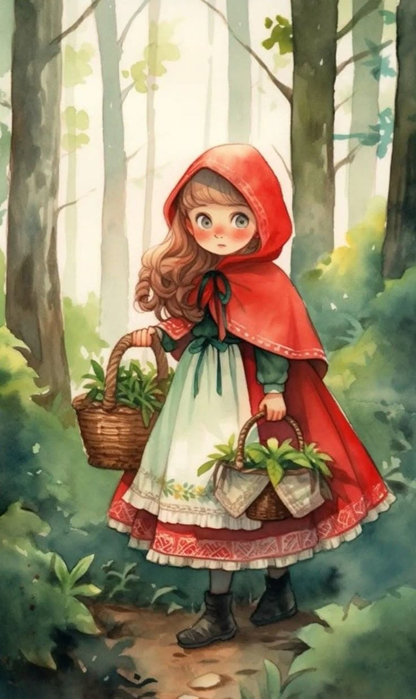
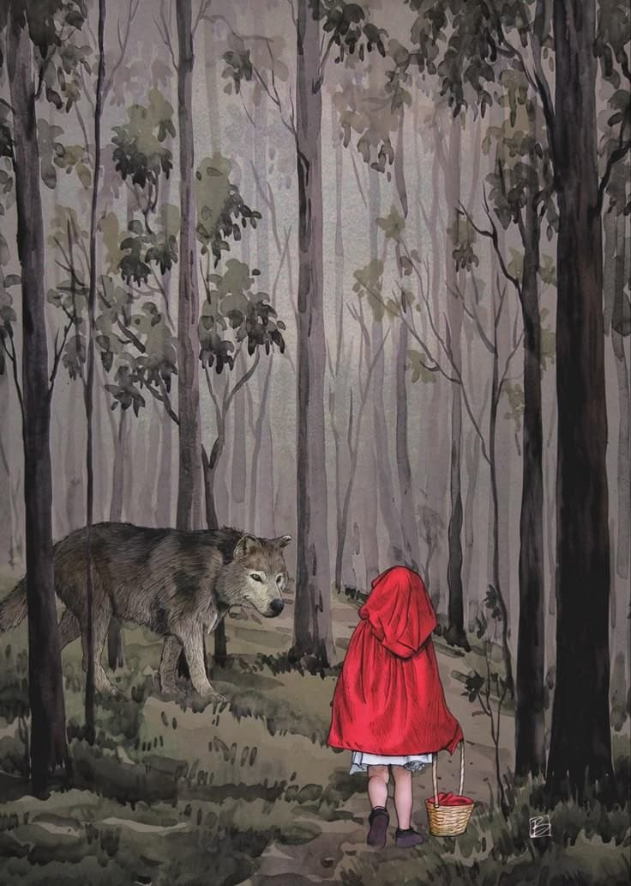
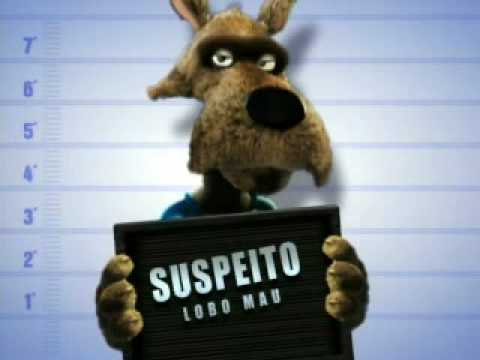

Chapeuzinho Vermelho sai de casa com uma cesta de doces.
Chapeuzinho encontra o Lobo Mau. Ele pergunta para onde ela está indo.
Chapeuzinho anda pela estrada sem interrupções.
Chega na casa da vovózinha

Lobo começa a desabafar com a chapeuzinho
Chapeuzinho colhe flores para avózinha sobre a aparição de um lobo.
Ela colhe maçãs para a vovózinha, e ve uma figura atras das árvores.
Vovó liga para o caçador. Caçador chega.
Chapeuzinho vá atrás da figura e se depara com um lobo e corre para a casa de sua avózinha
Caçador encontra o lobo
O lobo foge e não aparece nunca mais aparece

Chapeuzinho finalmente entrega os doces à vovó.
Chapeuzinho entrega os doces.